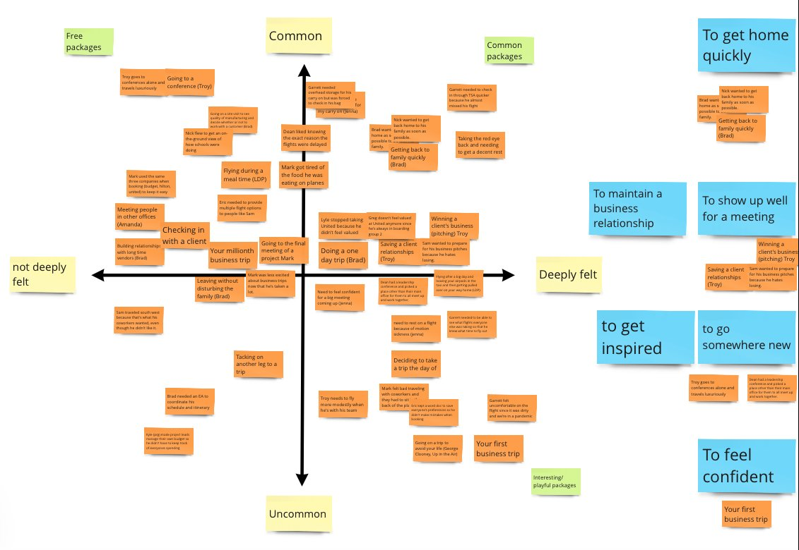
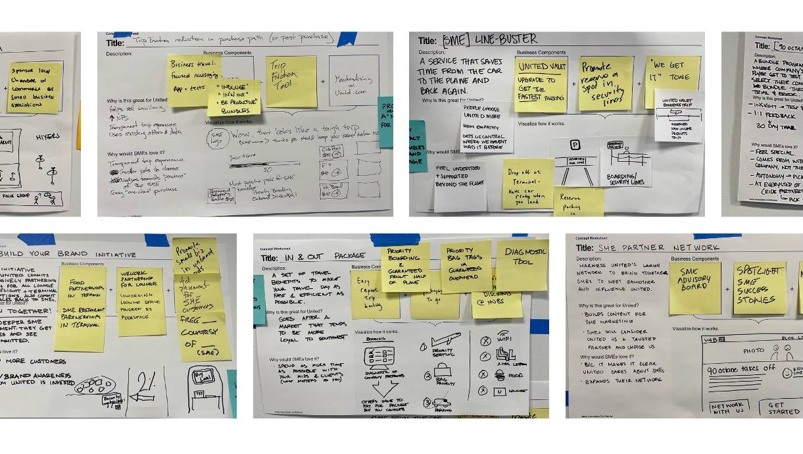

A segment that fell through the cracks
Small businesses represent a significant share of business travel, yet airline loyalty programs had been designed for two audiences: individual frequent flyers and large corporations with managed travel policies. The small business owner, traveling regularly but without a procurement team or a negotiated corporate rate, had no purpose-built home.
The airline had a hypothesis that a dedicated SMB offering could unlock meaningful revenue. As Project Lead, I was asked to scope and run the full research and concept process: from secondary market sizing to ethnographic fieldwork in business owners' offices, through an immersive stakeholder synthesis session, and into a concept deliverable that included a P&L, member journey, product roadmap, and five-year growth trajectory.
The project was a collaboration with a strategy and innovation firm. I led research design, recruitment, field execution, synthesis facilitation, and concept development.

The practices insight: small businesses are structurally different
The research centered on 3-hour in-office ethnographic interviews, conducted at each business's own location. Seeing people in their actual environment, surrounded by their team, their tools, and the rhythms of their workday, produced a quality of insight that a conference room or video call cannot replicate.
Twenty participants across 10 businesses, recruited to represent diversity in industry, geography, size, and travel frequency:
- 10 businesses spanning professional services, manufacturing, consulting, and tech
- CEOs and CFOs interviewed in pairs to surface organizational dynamics alongside individual perspectives
- Travel frequency ranging from 4 to 30+ trips per year
The central finding from narrative analysis was a structural distinction about how small businesses govern behavior. They do not operate by explicit policy (like large corporations) or by pure personal preference (like individual travelers). They operate by practices: informal customs that are grown by culture, flexible but ambiguous, and enforced by social norms rather than rules. Where a corporate traveler says "I have to," an SMB owner says "I should."
The practices frame reoriented the entire design problem. A successful program could not be built on the assumption of rational policy compliance or individual loyalty incentives alone. It had to work with the peer-trust dynamics and informal norms that actually drive SMB decision-making.

The research also mapped the SMB travel journey across planning, booking, in-transit, and post-trip phases, surfacing the specific moments where small business owners felt most underserved and most open to a differentiated offering.

| What we thought going in | What the research showed |
|---|---|
| SMBs want total freedom | SMBs want to know what "reasonable" looks like so they can feel confident in their choices |
| SMBs make purely business-driven decisions | Business decisions are often rationalized personal decisions, which creates guilt |
| Lack of policy is a pain point | SMBs don't want policies; they manage travel through norms and peer guidance |
| Loyalty programs need to reward the individual | Community engagement and belonging are equally important loyalty drivers |
Immersing stakeholders in the research before designing anything
One of the most consequential design decisions on this project was how we structured the transition from research to ideation. Rather than presenting findings in a deck and moving to a whiteboard session, we ran a full-day video-based insights immersion with stakeholders from IT, Sales, Product, and Marketing.
I curated video clips from the ethnographic interviews, organized around the key tensions and reframes from the research. Stakeholders watched business owners talk about their peer networks, their ambivalence about policy, their pride in staying small. Then they ideated from that shared context, not from a summary slide.
The quality of ideas was measurably different. Concepts generated after direct exposure to participant voices were grounded in real customer tensions rather than internal assumptions. The afternoon ideation session produced over 20 distinct concepts, evaluated across desirability, viability, and feasibility before converging on a direction.
"SMBs don't have or want policy. They manage with norms. Big companies are adopting practices too, just like SMBs."Stakeholder insight captured during the immersion session


An invite-only program built on peer trust, not points mechanics
The concept that emerged from ideation was shaped directly by the practices insight. A standard points program would have replicated the individual-flyer model; a managed corporate account would have imposed the policy model. Neither fit SMBs.
The program concept operates on peer referral: members invite peers from their professional network, not the airline. Joining through a trusted contact changes the relationship from transactional to communal. Package benefits flex by business type, recognizing that a manufacturing company traveling for site visits has different needs than a consulting firm traveling for client pitches. And benefits extend beyond flights to reduce business friction, serving the business, not just the traveler.

The concept deliverable included a full member journey, a three-horizon product roadmap across packages, benefits, messaging, and pricing, and a financial model projecting growth from a single pilot market to national scale.

The model pilots in a single hub city with SMBs of 50 to 200 employees and a minimum air spend threshold. Invite selectivity (five invites per member, 15 to 30 percent acceptance rate) drives perceived scarcity and community trust. As practices form around the program, market share of SMB air spend is projected to increase from 25 percent to 35 percent by year five.

A concept grounded in research and sized for the market
On the design value of structured stakeholder immersion
The video-based immersion format is the most effective tool I have used for closing the gap between research and design. When stakeholders hear a business owner describe how they make decisions in their own words, they internalize the customer in a way that a slide summary cannot produce. The output is not just better-informed ideas: it is a shared mental model across functions that reduces re-litigation of findings downstream. The format does require significant prep investment to select and sequence the right clips, and I now build that editing time explicitly into the project plan from the start rather than treating it as overhead after analysis. The other thing this project reinforced is the value of financial modeling as a design tool. Attaching a P&L and growth trajectory to the concept elevated it from a promising idea to a fundable business case, which changed the conversation with stakeholders from "interesting" to "how do we pilot this."